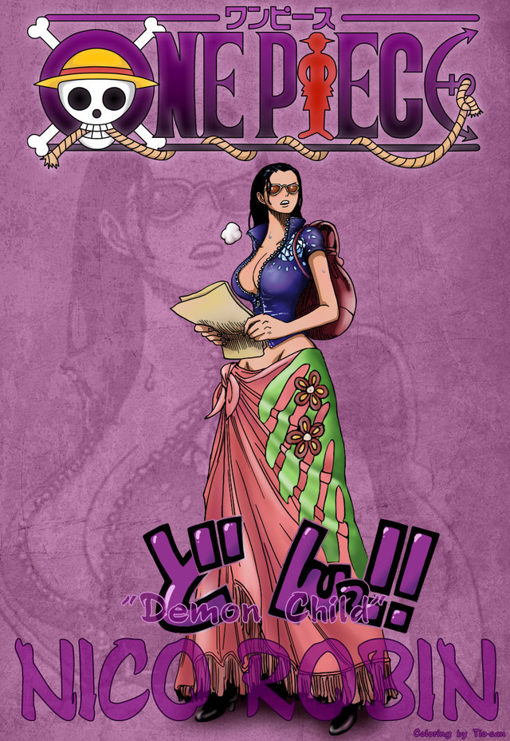

“恶魔之子”妮可·罗宾（ニコ·ロビン/Nico Robin）
初次登场：漫画第114话
年龄：28岁→30岁
生日：2月6日
血型：S型
身高：188cm
故乡：西海▪奥哈拉岛（已灭）
身份：奥哈拉岛考古学家→……→巴洛克工作社副社长Miss.AllSunday
→草帽海贼团考古学家
三围：B99▪W59▪H89
喜欢的食物：三明治，不太甜的蛋糕，适合咖啡的食物
特长：考古
梦想：寻找真正的“历史正文”，并且在历史正文碑的指引下，到达伟
大航道的尽头“拉夫德鲁”。
恶魔果实：超人系▪花花果实
悬赏：7900万（奥哈拉事件）→8000万（司法岛事件）→1亿3000万（德雷斯罗萨篇）
年仅8岁就被悬赏千万的奥哈拉幸存者。在巴洛克解散后，加入草帽海贼团。个性
冷静，擅长考古学以及暗杀，学识渊博，对于世界政府、海盗、航海一事都知道
的很详细。目标是找到真正的历史正文，绝不饶恕践踏历史文物的人。